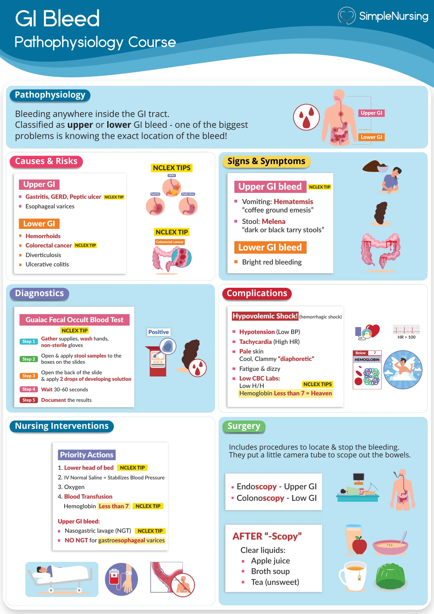
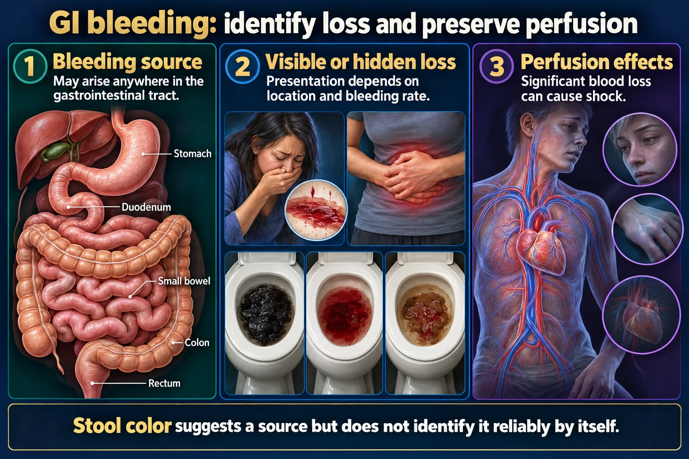

A client with an upper GI bleed vomits bright red blood. The nurse documents this finding using which term?
Answer
Hematemesis
Reasoning
Hematemesis is the vomiting of blood and is more commonly associated with gastric ulcers.
Clinical detail
Melena (black, tarry stools) reflects digested blood and is more common with duodenal ulcers.
Why the other answers do not fit
- Melena
Melena (black, tarry stools) reflects digested blood and is more common with duodenal ulcers.
- Hematochezia
- Steatorrhea
Shared reasoning for choices without a separate note: Hematemesis is the vomiting of blood and is more commonly associated with gastric ulcers. Melena (black, tarry stools) reflects digested blood and is more common with duodenal ulcers.

